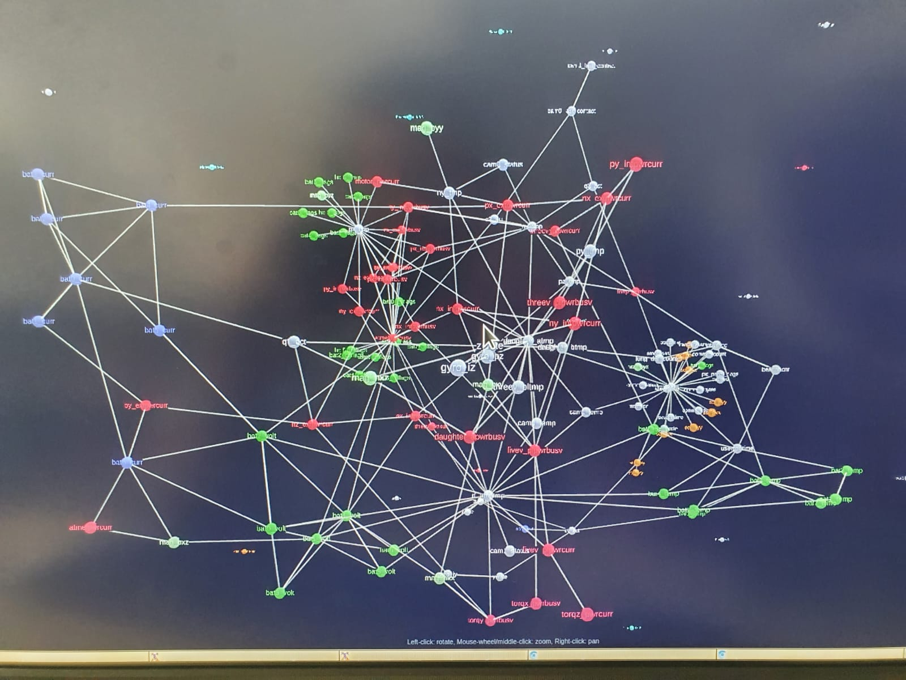

At the end of my second year of college I needed to do an internship of 6 weeklong.
I had the chance of doing it at parametry.ai in Germany, which is a small start-up about machine learning and
space operation. Right now, parametry.ai has 3 different projects:
- a cloud server which stock data for other company.
- A blockchains project to keep track of the satellite and the mission
- Polaris which is an open-source project to apply machine learning to satellite telemetry.
Which was the project I work on during my stay
The idee of Polaris his to use the machine learning to lesser the amount of data receives by the
satellite operator.
Ok that’s great but what hell does this mean?
Well, the way satellite works now days is basic.
You have your different component of your satellite that give and receive information
from the other component or their instrument. So, the satellite has a huge amount of data
going in and out and all this data is sent back to the operators which normally,
only 1 or 2 out of the 5 guys truly know the satellite and how the satellite is supposed to work.
We are using algorithms to try to reduce the among of data and to pinpoint the source of the probleme.
During my internship I’ve experience how it fell to work in a start-up.
It was my first time in that kind of environment. I must it was quite the experience.
We start the days with a stand-up meeting at 9H30 where we talk about what we’ve done et which task we will do todays.
We work by daily task more than by weekly task of course we have an objective for the end of the week.
Also, we push everything before Tuesday so we have this day and Fridays to fix up any problem.
We can also do a review on our progress.
It is a bit disturbing to not have clear working hours.
Yes, we can arrive when we want at least before 9h30 and we leave when we are done for the days.
It gives a felling of freedom, and you don’t have the stress due to the fact you haven’t finish your objective.
Plus, the team is supper friendly between each other, we having a quick look at each other project .
Durant mon stage j’ai pu parler un peu d’une de mes passions le speed-run.
Pour faire une courte introduction le principe de speed-run est de finir un jeu le plus rapidement possible en utilisant différentes techniques.
Il existe aussi plusieurs catégories dans le speed-run, le any%, le 100%, le glitch-less et bien d’autres.
On a parlé d’un aspect plus précis qui est le T.A.S soit Tool-Assited-Speedrun.
La catégorie qui m’attire le plus est donc le T.A.S
Le principe du T.A.S est de soustraire les limites de l’humain pour finir le jeu en utilisant des émulateurs qui permettent de ralentir le jeu voir de remplacer le joueur par un code qui permet de faire des inputs à la « frame perfect ». La machine intervient donc au moment où l’Homme atteint ses limites pour réaliser des actions dans une période de temps beaucoup trop courte.
Après en avoir discuté un peu avec le reste de l’équipe de mon stage, ils ont trouvé l’idée amusante. Ils m’ont dit que l’utilisation de machine Learning dans ce domaine est intéressante et ne serait pas un mauvais début pour monter en compétence tout en devenant un acteur et plus juste, un spectateur.
J’ai donc pu échanger avec mon maitre de stage sur ce domaine. Il m’a apporté des indications de comment certaines manipulations sont effectuées car certains jeux avaient des paternes aléatoires, il fallait donc pouvoir effectuer de la reconnaissance d’image et pouvoir effectuer des choix ce qui m’a montré l’application de l’intelligence artificiel dans ce domaine.
Cette perspective de lier l’intelligence artificelle aux jeux me passionne de plus en plus, c’est un domaine que j’aimerais beaucoup découvrir et comprendre.
Durant mon stage j’ai parlé d’une de mes expériences favorites dans le cadre scolaire. La réalisation du projet « Hive »
Hive c’est quoi ?
C’est une histoire interactive en VR qui nous mets dans la peau d’un jeune scientifique qui doit traverser une France ravagée par une apocalypse écologique due à l’effondrement des abeilles.
Ce fut ma première expérience de développement d’un projet en réalité virtuelle et ce fut une expérience incroyable j’ai pu découvrir une nouvelle façon d’exprimer des idées.
A la base on voulait faire réagir les personnes sur les constats écologiques qui passait souvent à la trappe en vers le grand public.
On voulait donc utiliser le divertissement pour faire réfléchir et alarmer les personnes des problèmes.
On a parlé de Hive pour aborder la représentation de données de manière plus attractive et dynamique.
Nous avons donc abordé la possibilité de passer par de la réalité virtuelle pour afficher et exploiter les données des satellites. En pensant à cette idée, nous nous sommes demandé s’il serait plus agréable de visualiser nos rendus dans un vrai espace en trois dimensions grâce à la technologie des casques de réalité virtuel. Le point est que nous pourrions nous déplacer dans un espace dédié à nos données pour avoir un visuel plus simple et ne pas devoir faire des sacrifices pour avoir qu’un haut tôt de pourcentage dû au fait que nous avons superposé deux nœuds de flux thermique. La réalité virtuelle rendrait possible le fait de se mouvoir dans des informations récupérées sur le satellite est pouvoir interagir de façon immédiate pour voir les liens entre chaque nœud facilement.
Bien que cette idée ne se soit pas concrétisée, j’ai pu exposer mon point de vue et l’idée a était retenu comme intéressante mais non réalisable par manque de personne compétente pour la réaliser.
The mission I was assigned to is Polaris. The mission was creating by parametry so we could predict a geomagnetic event in space to secure satellites and improve their functionality.
The first step to take part of this mission was to learn about geomagnetic event in space. Through this I learned about space weather, which is the entirety of all the physical and phenomenological state of natural space environment, for example a well know form of space weather is a solar flare, a geomagnetic storm or even an aurora.
Once the research phase on spatial weather completed, I discovered to the data associated. It was at this stage that wI was introduced to data analysis and machine learning. The project being in python, Padas was the library used to format the data in such a way to be utilisable by our programs. Pandas is a library in python to manage data frame. The satellite data was downloaded in .json format then transformed into .csv format. The data was then reorganized in chronological order and the missing data was completed in order to keep a uniform timestep.
Once the initial stage completed, I searched our database for a space event that had been recorded by one of the satellites we have access to. The event I was searching for had to be significant enough to ensure that it qualifies as one and therefore ensure the reliability of the program. I managed to find a solar flare of the highest level, and which was recorded by a satellite. The next step was to organise the data in order to create a model. Once the model was completed, it was used to create a graph to visualize the thermic flux of every element in the satellite.

Afterward we created a graph for every day of the week of the solar flare to observe how the satellite reacted, and thus create an artificial intelligence to predict those events.
This artificial intelligence will allow us to take care of the satellite more efficiently while they are operational and before we launch. This way maybe we can prevent the same loss that happened to the space X program.